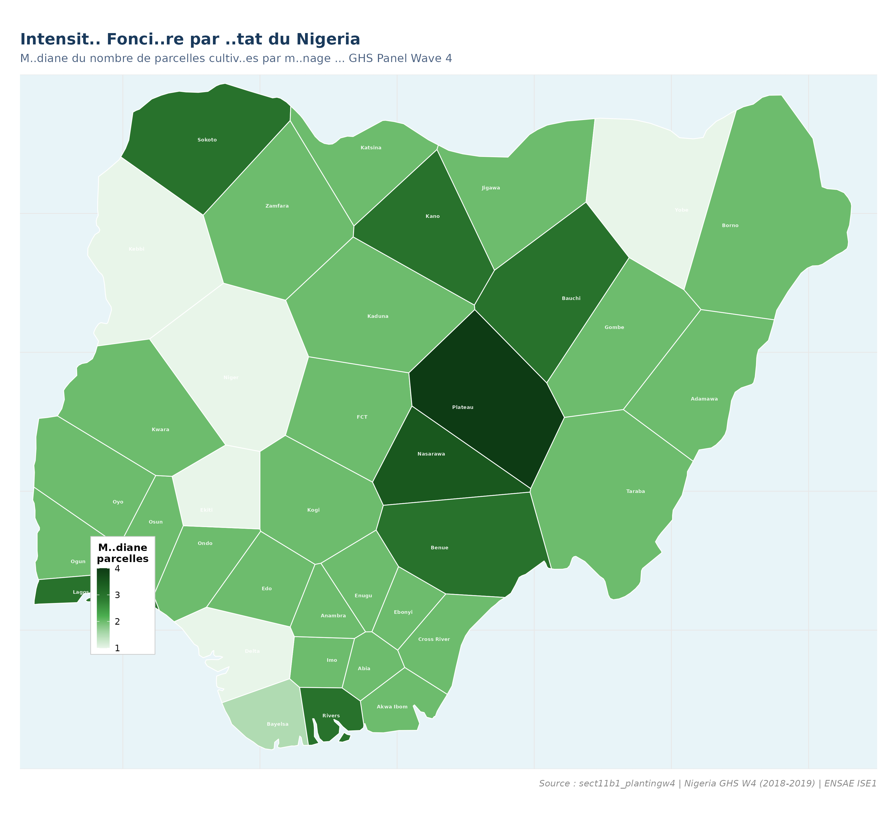
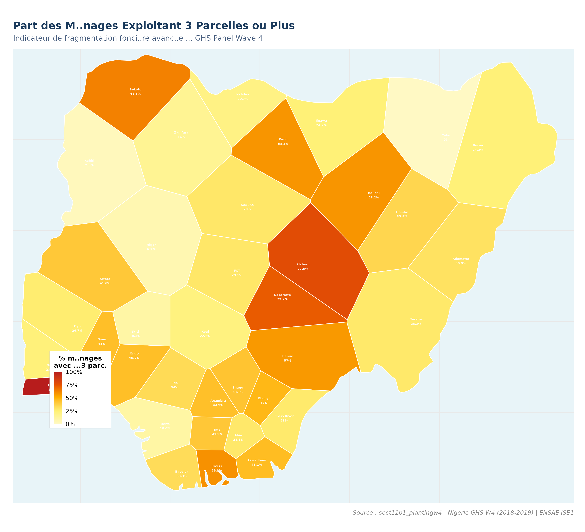
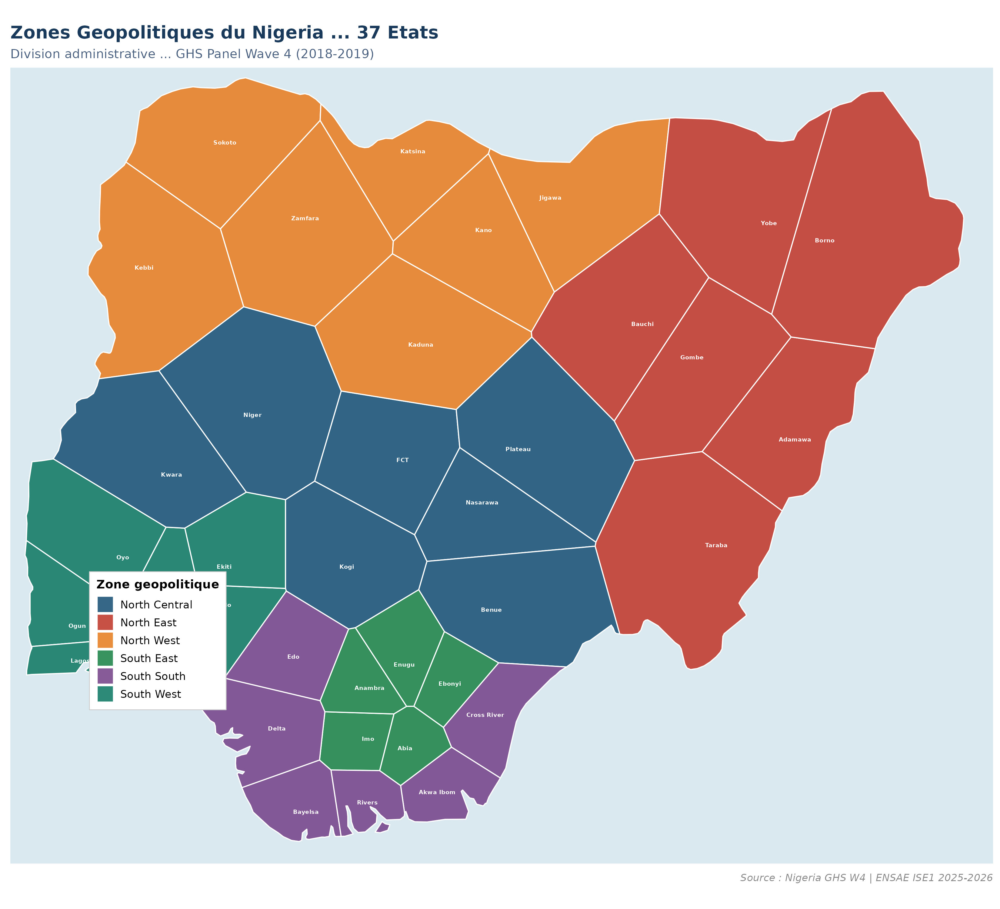
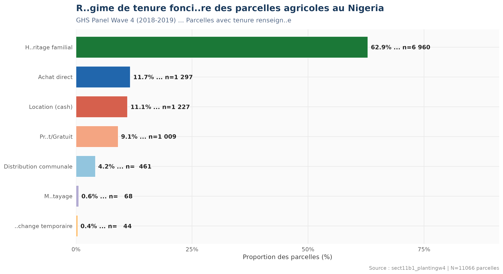
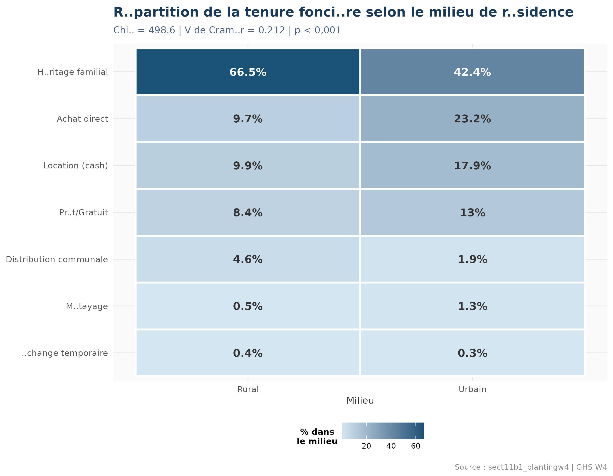
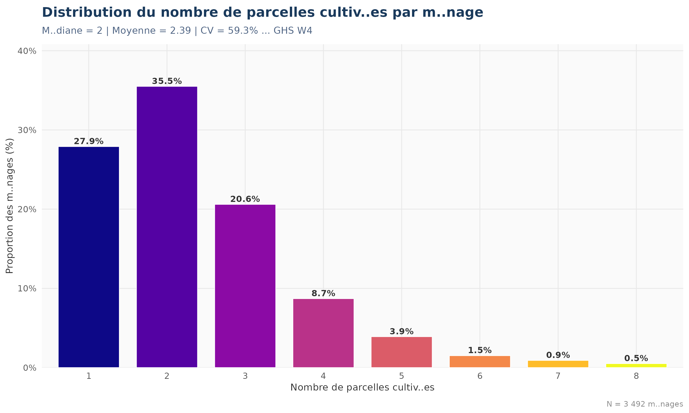
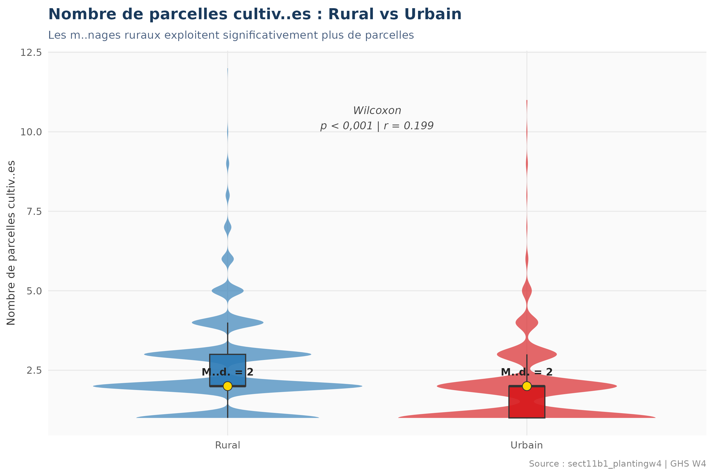
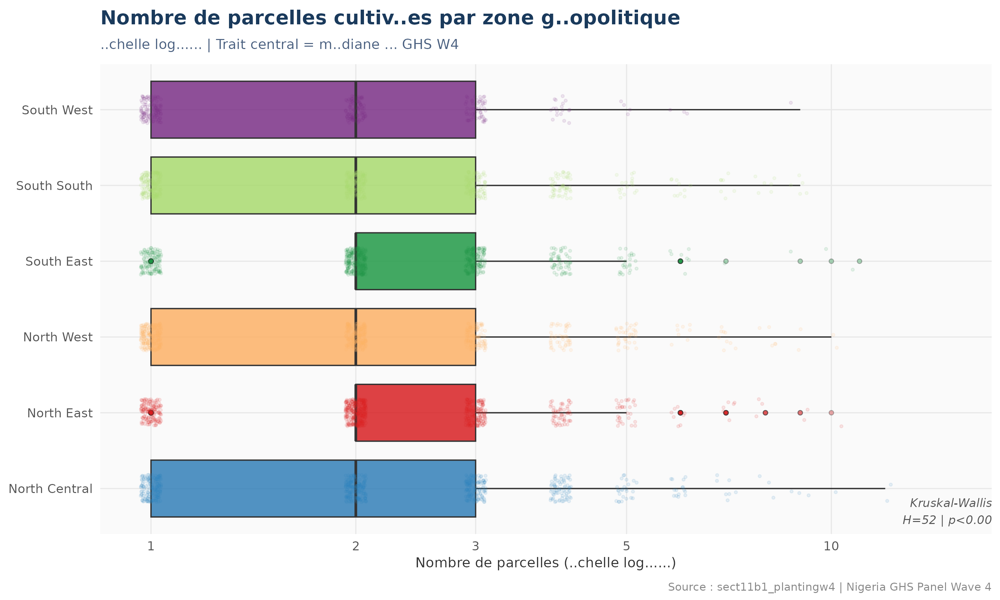
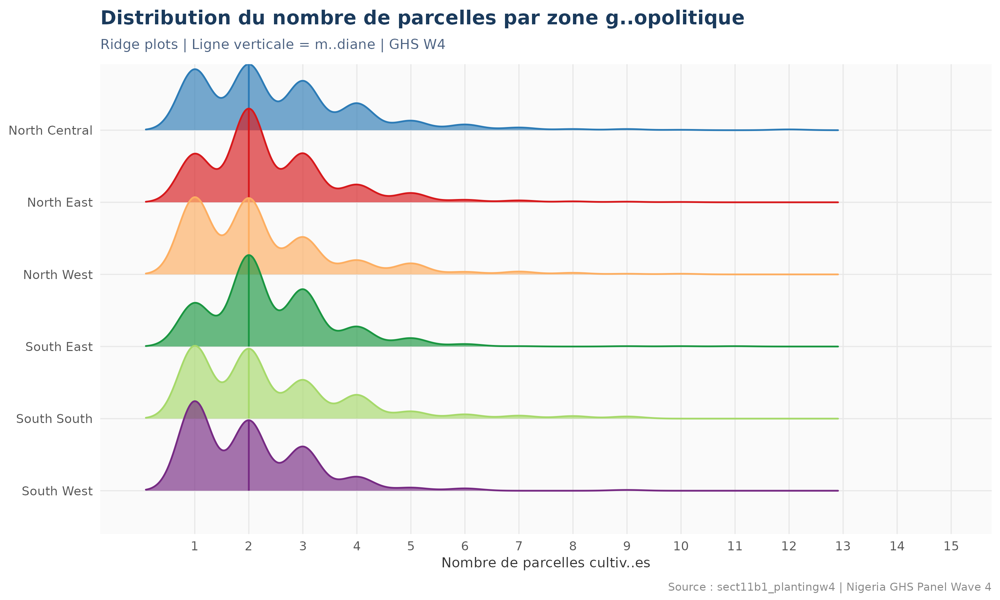
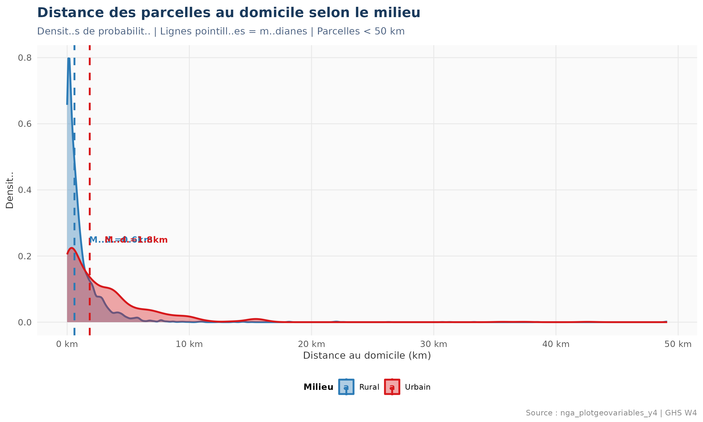

Nigeria General Household Survey Panel Wave 4 (2018-2019) | ENSAE ISE1 | 2025-2026
Cette analyse examine la structure foncière des exploitations agricoles nigérianes à partir du module parcelles du Nigeria General Household Survey (GHS) Panel Wave 4 (2018-2019). L'enquête LSMS-ISA, conduite par le NBS du Nigeria avec l'appui de la Banque mondiale, offre une couverture nationale exhaustive des 37 États.
Les fichiers mobilisés sont :
sect11b1_plantingw4.dta — Roster parcelles (tenure, sol, pente)nga_plotgeovariables_y4.dta — Variables GPS (altitude, distance)secta_harvestw4.dta — Poids de sondage + géolocalisationL'héritage familial domine le foncier nigérian. Les disparités entre zones géopolitiques sont très significatives, avec le Nord exploitant plus de parcelles par ménage que le Sud sous forte pression démographique.
L'héritage familial (62,9%) confirme la persistence des droits fonciers coutumiers, frein à l'investissement agricole long terme.
Médiane de 2 parcelles, CV=59,3% : l'exploitation nigériane reste morcelée, reflet du droit successoral coutumier.
Le Nord exploite plus de parcelles (systèmes extensifs), le Sud présente une agriculture plus intensive sous pression foncière.





| Statistique | Valeur |
|---|---|
| Chi-deux (X²) | 498,6 |
| Degrés de liberté | 6 |
| p-value | < 0,001 |
| V de Cramér | 0,212 |
| Interprétation | Association faible à modérée |
L'association est statistiquement très significative (p < 0,001) mais l'amplitude reste modérée (V de Cramér = 0,212). Les ménages urbains ont légèrement plus recours à la location et à l'achat direct, traduisant une dynamique de formalisation foncière liée à l'urbanisation.
| Statistique | Valeur |
|---|---|
| N ménages | 3 492 |
| Minimum | 1 |
| Q1 (25e pct) | 1 |
| Médiane | 2 |
| Moyenne | 2,39 |
| Q3 (75e pct) | 3 |
| Maximum | 12 |
| Écart-type | 1,42 |
| CV (%) | 59,3% (forte dispersion) |


| Zone Géopolitique | N Ménages | Médiane | Moyenne | CV (%) | % ≥3 parcelles |
|---|---|---|---|---|---|
| North Central | 636 | 2 | 2,35 | 55,7 | 27,0 |
| North East | 470 | 3 | 2,97 | 56,9 | 47,2 |
| North West | 861 | 3 | 3,02 | 56,3 | 49,6 |
| South East | 437 | 2 | 1,96 | 52,0 | 19,0 |
| South South | 613 | 2 | 2,19 | 57,1 | 22,5 |
| South West | 475 | 2 | 2,04 | 54,9 | 20,4 |



| Test | Objectif | Statistique | Ddl | p-value | Taille d'effet | Interprétation |
|---|---|---|---|---|---|---|
| Kruskal-Wallis | Parcelles ~ Zone | H = 51,98 | 5 | < 0,001 | — | Différences très significatives entre zones |
| Wilcoxon | Parcelles ~ Milieu | W = 547 430 | — | < 0,001 | r = 0,130 (faible) | Rural > Urbain, mais différence modérée |
| Chi-deux | Tenure ~ Milieu | X² = 498,6 | 6 | < 0,001 | V = 0,212 (modéré) | Association faible à modérée |
Les trois tests convergent pour confirmer des différences statistiquement très significatives dans la structure foncière nigériane. La fracture Nord-Sud (Kruskal-Wallis p < 0,001) est la plus marquée. La différence Rural-Urbain, bien que significative, reste d'amplitude modérée (r = 0,130), signalant une convergence progressive avec l'urbanisation. L'association Tenure × Milieu (V de Cramér = 0,212) confirme que les dynamiques foncières sont différentes selon le milieu, mais que d'autres facteurs (densité de population, histoire agricole, accès au marché foncier) jouent un rôle déterminant.